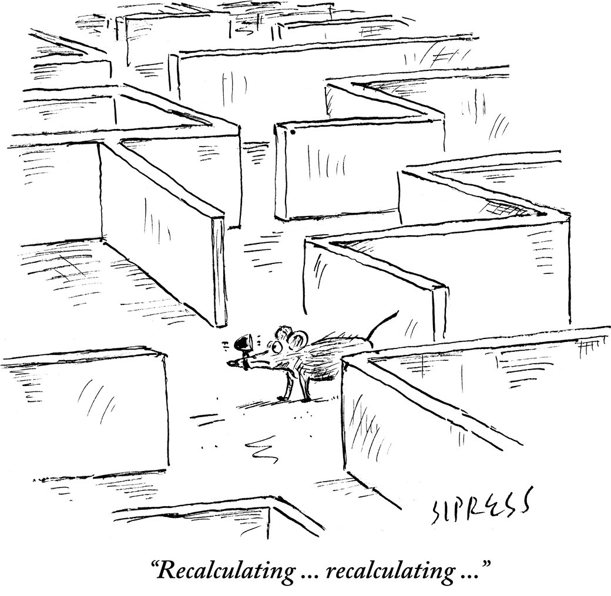

Yuejie Chi
Statistical and Algorithmic Foundations of Reinforcement Learning

Reinforcement learning (RL), which is frequently modeled as learning and decision making in Markov decision processes (MDP), is garnering growing interest in recent years due to its remarkable success in practice. A core objective of RL is to search for a policy - based on a collection of noisy data samples - that approximately maximizes expected rewards in an MDP, without direct access to a precise description of the underlying model. In contemporary applications, it is increasingly more common to encounter environments with prohibitively large state and action space, thus challenging the paradigm of RL in terms of both sample and computation efficiencies.
Broadly speaking, there are two common algorithmic approaches: model-based and model-free. In the model-based approach, one first learns to describe the unknown model using the data samples in hand, and then leverages the fitted model to perform planning - a task that can be accomplished by resorting to Bellman's principle of optimality. In comparison, the model-free approach attempts to compute the optimal policy (and the optimal value function) without learning the model explicitly, which lends itself to scenarios when a realistic model is difficult to construct or changes on the fly. There is a great interest in characterizing the trade-offs between sample complexity, computation complexity, and statistical accuracy of RL algorithms, and to design improved algorithms that achieve better trade-offs and meet new considerations. At the same time, we are actively pursuing applications of RL in real-world science and engineering applications such as wireless networks, graph mining and more.
Overview
Statistical and Algorithmic Foundations of Reinforcement Learning
Y. Chi, Y. Chen and Y. Wei, INFORMS TutORials in Operations Research, 2025.Sample Complexity of Reinforcement Learning: A Non-Asymptotic Perspective
Y. Chen, Y. Chi, J. Fan, G. Li and Y. Wei, Foundation and Trends in Statistics, in preparation. (Authors are listed alphabetically.)
Online RL with Exploration
Incentivize without Bonus: Provably Efficient Model-based Online Multi-agent RL for Markov Games [Arxiv]
T. Yang, B. Dai, L. Xiao, and Y. Chi, International Conference on Machine Learning (ICML), 2025.Value-Incentivized Preference Optimization: A Unified Approach to Online and Offline RLHF [Arxiv]
S. Cen, J. Mei, K. Goshvadi, H. Dai, T. Yang, S. Yang, D. Schuurmans, Y. Chi, and B. Dai, International Conference on Learning Representations (ICLR), 2025.-
Breaking the Sample Complexity Barrier to Regret-Optimal Model-free Reinforcement Learning [Arxiv]
G. Li, L. Shi, Y. Chen, and Y. Chi, Information and Inference: A Journal of the IMA, vol. 12, no. 2, pp. 969-1043, 2023. Short version at NeurIPS 2021 as a spotlight presentation. Sample-Efficient Reinforcement Learning Is Feasible for Linearly Realizable MDPs with Limited Revisiting [Arxiv]
G. Li, Y. Chen, Y. Chi, Y. Gu, and Y. Wei, Conference on Neural Information Processing Systems (NeurIPS), 2021.
Federated Reinforcement Learning
The Blessing of Heterogeneity in Federated Q-Learning: Linear Speedup and Beyond [Arxiv]
J. Woo, G. Joshi, and Y. Chi, Journal of Machine Learning Research, vol. 26, no. 26, pp. 1-85, 2025. Short version at ICML 2023.Federated Natural Policy Gradient and Actor Critic Methods for Multi-task Reinforcement Learning [Arxiv]
T. Yang, S. Cen, Y. Wei, Y. Chen, and Y. Chi, Conference on Neural Information Processing Systems (NeurIPS), 2024.The Sample-Communication Complexity Trade-off in Federated Q-Learning [Arxiv]
S. Salgia and Y. Chi, Conference on Neural Information Processing Systems (NeurIPS), 2024, oral presentation.Federated Offline Reinforcement Learning: Collaborative Single-Policy Coverage Suffices [Arxiv]
J. Woo, L. Shi, G. Joshi, and Y. Chi, International Conference on Machine Learning (ICML), 2024.
Robust Reinforcement Learning
Breaking the Curse of Multiagency in Robust Multi-Agent Reinforcement Learning [Arxiv]
L. Shi*, J. Gai*, E. Mazumdar, Y. Chi, and A. Wierman, International Conference on Machine Learning (ICML), 2025.Sample-Efficient Robust Multi-Agent Reinforcement Learning in the Face of Environmental Uncertainty [Arxiv]
L. Shi, E. Mazumdar, Y. Chi, and A. Wierman, International Conference on Machine Learning (ICML), 2024.The Curious Price of Distributional Robustness in Reinforcement Learning with a Generative Model [Arxiv]
L. Shi, G. Li, Y. Wei, Y. Chen, M. Geist, and Y. Chi, Conference on Neural Information Processing Systems (NeurIPS), 2023.Distributionally Robust Model-Based Offline Reinforcement Learning with Near-Optimal Sample Complexity [Arxiv] [Code]
L. Shi and Y. Chi, Journal of Machine Learning Research, vol. 25, no. 200, pp.1-91, 2024.Sample Complexity of Offline Distributionally Robust Linear Markov Decision Processes [Arxiv]
H. Wang, L. Shi, and Y. Chi, Reinforcement Learning Journal, vol. 3, pp. 1467-1510, 2024.
Offline and Simulator RL
-
Settling the Sample Complexity of Model-Based Offline Reinforcement Learning [Arxiv]
G. Li, L. Shi, Y. Chen, Y. Chi and Y. Wei, The Annals of Statistics, vol. 52, no. 1, pp. 233-260, 2024. -
Is Q-Learning Minimax Optimal? A Tight Sample Complexity Analysis [Arxiv]
G. Li, C. Cai, Y. Chen, Y. Wei, and Y. Chi, Operations Research, vol. 72, no. 1, pp. 222-236, 2024. Short version at ICML 2021. -
Breaking the Sample Size Barrier in Model-Based Reinforcement Learning with a Generative Model [Arxiv]
G. Li, Y. Wei, Y. Chi, and Y. Chen, Operations Research, vol. 72, no. 1, pp. 203-221, 2024. Short version at NeurIPS 2020. High-probability Sample Complexities for Policy Evaluation with Linear Function Approximation [Arxiv]
G. Li*, W. Wu*, Y. Chi, C. Ma, A. Rinaldo, and Y. Wei, IEEE Trans. on Information Theory, vol. 70, no. 8, pp. 5969-5999, 2024.Reward-agnostic Fine-tuning: Provable Statistical Benefits of Hybrid Reinforcement Learning [Arxiv]
G. Li*, W. Zhan*, J. D. Lee, Y. Chi, and Y. Chen, Conference on Neural Information Processing Systems (NeurIPS), 2023. (*=equal contribution)Pessimistic Q-Learning for Offline Reinforcement Learning: Towards Optimal Sample Complexity [Arxiv]
L. Shi, G. Li, Y. Wei, Y. Chen, and Y. Chi, International Conference on Machine Learning (ICML), 2022.-
Minimax-Optimal Multi-Agent RL in Markov Games With a Generative Model [Arxiv]
G. Li, Y. Chi, Y. Wei, and Y. Chen, Conference on Neural Information Processing Systems (NeurIPS), 2022, oral presentation. -
Sample Complexity of Asynchronous Q-Learning: Sharper Analysis and Variance Reduction [Arxiv]
G. Li, Y. Wei, Y. Chi, Y. Gu, and Y. Chen, IEEE Trans. on Information Theory, vol. 68, no. 1, pp. 448-473, 2022. Short version at NeurIPS 2020.
Policy Optimization
Faster Last-iterate Convergence of Policy Optimization in Zero-Sum Markov Games [Arxiv]
S. Cen, Y. Chi, S. Du, and L. Xiao, International Conference on Learning Representations (ICLR), 2023. (Authors are listed alphabetically.)Asynchronous Gradient Play in Zero-Sum Multi-agent Games [Arxiv]
R. Ao, S. Cen, and Y. Chi, International Conference on Learning Representations (ICLR), 2023. (Authors are listed alphabetically.)Fast Policy Extragradient Methods for Competitive Games with Entropy Regularization [Arxiv]
S. Cen, Y. Wei, and Y. Chi, Journal of Machine Learning Research, vol. 25, no. 4, pp. 1-48, 2024. Short version at NeurIPS 2021.Independent Natural Policy Gradient Methods for Potential Games: Finite-time Global Convergence with Entropy Regularization [Arxiv] [Invited Paper]
S. Cen, F. Chen, and Y. Chi, IEEE Conference on Decision and Control (CDC), 2022.Fast Global Convergence of Natural Policy Gradient Methods with Entropy Regularization [Arxiv] [Code]
S. Cen, C. Cheng, Y. Chen, Y. Wei, and Y. Chi, Operations Research, vol. 70, no. 4, pp. 2563-2578, 2022.
INFORMS George Nicholson Student Paper Competition FinalistPolicy Mirror Descent for Regularized Reinforcement Learning: A Generalized Framework with Linear Convergence [Arxiv]
W. Zhan*, S. Cen*, B. Huang, Y. Chen, J. D. Lee, and Y. Chi, SIAM Journal on Optimization, vol. 33, no. 2, pp. 1061-1091, 2023. Short version at OPT 2021 as an oral presentation. (*=equal contribution)Softmax Policy Gradient Methods Can Take Exponential Time to Converge [Arxiv]
G. Li, Y. Wei, Y. Chi, and Y. Chen, Mathematical Programming, vol. 201, pp. 707-802, 2023. Short version at COLT 2021.
Applications and Empiricism
Robust Gymnasium: A Unified Modular Benchmark for Robust Reinforcement Learning [Arxiv] [Website] [Code]
S. Gu*, L Shi*, M. Wen, M. Jin, E. Mazumdar, Y. Chi, A. Wierman, C. Spanos, International Conference on Learning Representations (ICLR), 2025.Scalable Dynamic Resource Allocation via Domain Randomized Reinforcement Learning
Y. Wang, L. Shi, M. Lee, J. Sydir, Z. Zhou, Y. Chi, and B. Li, IEEE Global Communications Conference (GLOBECOM), 2024.Seeing is not Believing: Robust Reinforcement Learning against Spurious Correlation [Arxiv] [Website]
W. Ding*, L. Shi*, Y. Chi, and D. Zhao, Conference on Neural Information Processing Systems (NeurIPS), 2023. (*=equal contribution)Offline Reinforcement Learning with On-Policy Q-Function Regularization [Arxiv]
L. Shi, R. Dadashi, Y. Chi, P. S. Castro, and M. Geist, European Conference on Machine Learning (ECML), 2023.A Trajectory is Worth Three Sentences: Multimodal Transformer for Offline Reinforcement Learning
Y. Wang, M. Xu, L. Shi, and Y. Chi, Conference on Uncertainty in Artificial Intelligence (UAI), 2023.